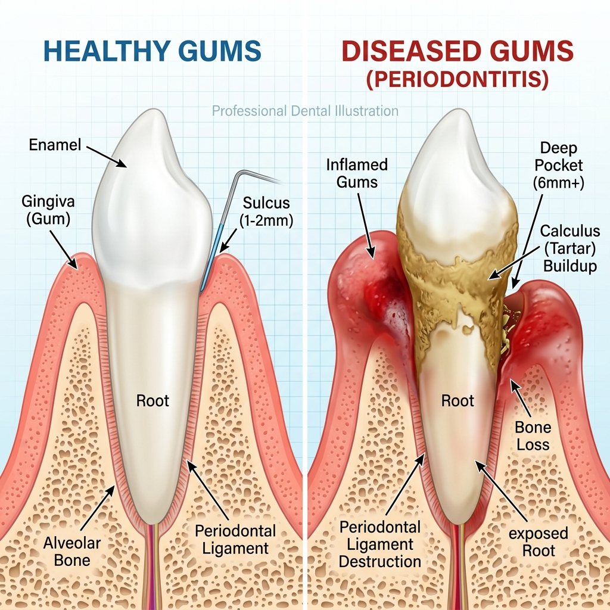
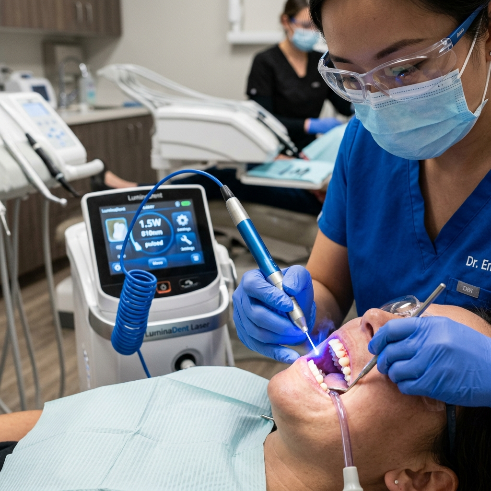
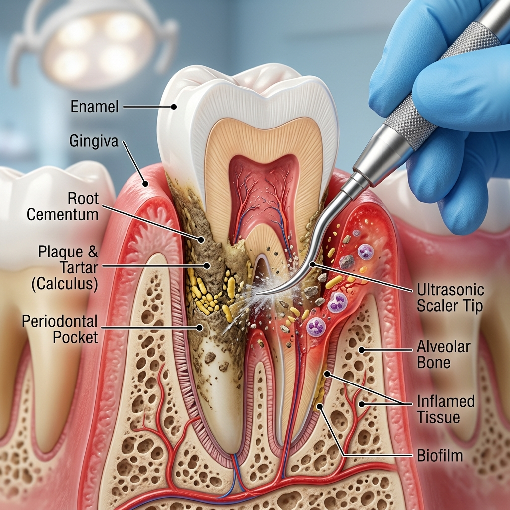

Protect your smile at its foundation. Our advanced gum treatments stop infection and restore the health of your supporting tissues.
Dental health is not just about teeth—it also involves the health of your gums. When gum disease becomes severe and cannot be treated with simple cleaning procedures, Dental Flap Surgery is recommended. This advanced periodontal treatment helps remove deep infection, restore gum health, and prevent tooth loss.
If you are searching for the best dental clinic in Dammaiguda, Hyderabad, Telangana, Vijaya Dental & Implant Center offers premium and advanced flap surgery treatment with expert care and modern technology. Our goal is to stabilize your oral environment and ensure your teeth remain firmly supported for life.
Dental Flap Surgery, also known as periodontal flap surgery, involves gently lifting the gums to allow deep cleaning of the tooth roots and infected areas that cannot be reached through regular scaling.

Visualizing the challenge: We treat deep pockets where bacteria hide and multiply.
If non-surgical scaling and root planing are not enough to stop the progression of periodontitis.
Gums that bleed consistently while brushing or flossing, often accompanied by deep redness and swelling.
Teeth appearing "longer" because the gums are pulling away, exposing sensitive root surfaces.
Spaces between the tooth and gum that are deeper than 5mm, where bacteria can avoid regular cleaning.

At Vijaya Dental, we don't just perform traditional surgery; we use microsurgical techniques and, where appropriate, laser-assisted technology to ensure minimal trauma and faster healing.
The procedure is meticulously performed under local anesthesia:
Gum health is about more than just your mouth—it affects your entire body.
Scientific research has clearly established a link between periodontal disease and overall health. Bacteria from deep gum infections can enter the bloodstream, potentially contributing to cardiovascular issues, diabetes complications, and even respiratory problems. This is why flap surgery is often a vital step in maintaining your total well-being.
By removing these reservoirs of bacteria, we reduce the systemic inflammatory load on your body. At Vijaya Dental, we take a holistic view of your health, ensuring that your periodontal treatment supports your overall wellness goals.
Healthy gums provide a tight seal around your teeth, acting as a barrier for the rest of your body. When this barrier is compromised by periodontitis, flap surgery restores the structural integrity of the gum-to-tooth seal.
Moreover, healthy gums are essential for the success of other treatments like dental implants or bridges. A strong foundation ensures that your cosmetic and restorative investments last a lifetime.
Recovery is a collaborative process. We provide detailed instructions to ensure your gums heal perfectly. In the first few days, a soft diet is recommended, and we may provide a special antibacterial rinse to keep the site sterile.
Most patients can return to work the next day. Within 1–2 weeks, the gums begin to tighten and re-attach to the clean tooth roots. You'll notice a significant reduction in swelling and bleeding almost immediately.
The long-term goal of flap surgery is to reduce pocket depths to a level where you can effectively maintain them with normal brushing and flossing, preventing the return of infection.

No. The procedure is performed under local anesthesia, so the area is completely numb. Most patients describe the feeling as similar to getting a deep filling or a complex cleaning.
Depending on whether we are treating one quadrant or the whole mouth, the procedure typically takes between 45 and 90 minutes.
Your gums will look healthier—pinker and firmer. In some cases, because the swelling is reduced, you may see more of the tooth surface, but this is a sign of health and easier hygiene.
We recommend soft foods for the first 3–5 days. You can gradually return to your normal diet as comfort allows, usually within a week.
Flap surgery is used when deep cleaning (scaling and root planing) cannot reach the bottom of the pockets. It is the "next step" to ensure all bacteria is removed.
Yes, if oral hygiene is not maintained. However, surgery provides a "clean slate" and makes it much easier for you and our dental team to keep the gums healthy moving forward.